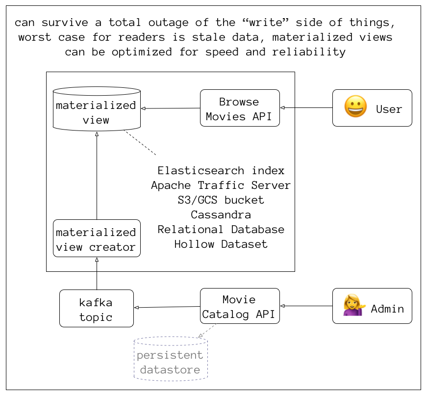
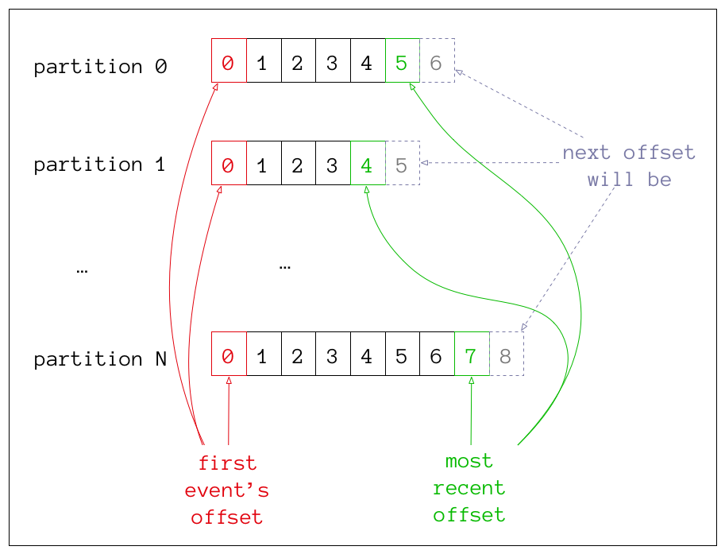
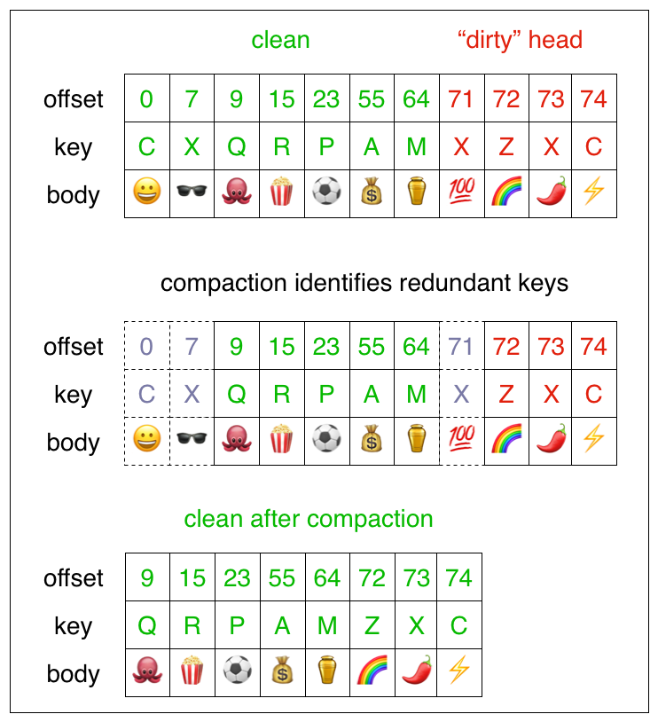

Microservices
“loosley coupled Service-Oriented Architecture with bounded contexts”
— Adrian Cockcroft (AWS/Netflix)
Bounded Contexts
from Domain-Driven Design, a conceptual model where
a specific domain model applies
Microservices all share a single domain model?
You've built a
"distributed monolith"
Golden Rule of Component Reliability
any critical component must be 10 times as reliable as the overall system's target, so that its contribution to system unreliability is noise
Tight Coupling
Services directly calling services
Looser Coupling
some caching, reverse proxy, grace periods, circuit breakers
issues: cache invalidation rules, cold start/cache flush,
emergency changes, race conditions
Ideal Coupling
totally functional during a partition
only thing more "loose" is no dependency at all
#1 thing you can do for scalability and fault-tolerance?
separate your
reads and writes
don't do this if you don't need scalability & fault-tolerance
read requests are likely many orders of magnitude more frequent
with exceptions (logging/metrics) where writes are far more frequent
write requests have consequences
cache-invalidation, notifications, etc
decouple and scale reads with materialized views
also called "derived data"
optimized for the query patterns of each microservice
decouple and scale writes with event buffers
example patterns include Event Sourcing/CQRS
(Command Query Responsibility Segregation)
Separate Reads and Writes

A log-based
(append-only) message broker
combines databases (durable storage) and messaging (queuing and publish/subscribe)
Producer (API)
↓
Kafka Broker
↓
Consumer (API)
Kafka cluster is made of many brokers
uses Zookeeper for leader-election and broker metadata
Brokers have many named topics
replication across brokers configured per topic
Each topic has 1..N partitions

Producers push data to a topic's partitions
# send message {"id":"123", value: "foo"} with key "123"
echo '123,{"id":"123", value: "foo"}' |\
kafkacat -P -K ',' -b 127.0.0.1:9092 -t the-topic
Message payload is binary data
Can be String/JSON/Avro/Protocol Buffers/Whatever
Producers can publish lots of data quickly
# send 100,000 messages with key 1 through 100000
# and value {"id": "<#>", value: "bar"}
seq 100000 |\
awk '{printf "%s,{\"id\":\"%s\", value: \"bar\"}\n", $1, $1}' |\
kafkacat -P -b 127.0.0.1:9092 -t the-topic -K ','
consistent hashing
messages with the same key always go to the same partition
Consumers are pull-based
they maintain per-partition offsets
by default in a special topic called __consumer_offsets
Consumption is not destructive
messages have a retention period (default 24-hours)
within a consumer group there can be as many consumers as there are partitions
Message compaction keeps one message per key
Compaction keeps the latest value per key

Kafka Brokers have few* moving parts
focused on speed, reliability, reasonability
*compared to things like JMS, AMQP, RabbitMQ
How does Kafka enable decoupling?
enables event-based integration between microservices
if a consumer falls behind the event log acts as a buffer and doesn't stop producers
many consumers per partition
multiple specialized consumers can be created (ES for search, JSON payload in S3 buckets for SPA, logging/metrics driven off kafka)
clear separation point, can more easily determine where errors are happening, during triage, check kafka, if it's there you know the issue is after kafka, else before
materialized views can be easily rebuilt
Async event log
many writers
many readers
scale to multiple availability zones, datacenters, or even multiple cloud providers
great for Blue/Green Deployments
new fields get added to write side first
then modify materialized view creator so it has the new fields
in whatever format it wants, spin up a new green cluster of materialized view creator
that creates new green materialized views and then new green web services that read from those
new materialized views, and you’re done
if there is an issue, when you flip over to green, you can have left your old blue
cluster up, still populating the old way of doing things and can switch back as quickly as
flipping your load balancers back over
What should the materialized view creator be?
akka app
simple java app/ratpack app with kafka client consumer libraries
stream processing framework like flink, spark, etc (apache has 10+ of these alone but they tend to be heavy)
need good lag monitoring, pretty easy to do with kafka API or something like burrow
hollow (now transition to hollow)